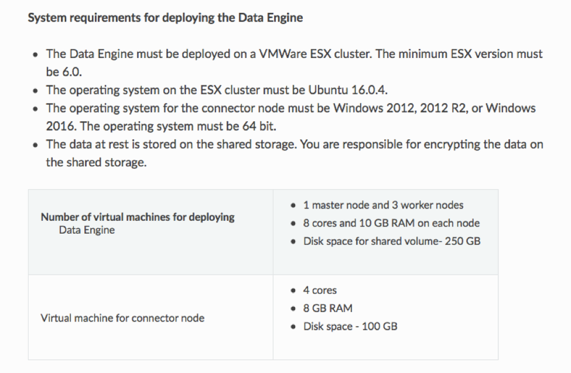

Loom Alpha1 Datasheet¶

In today’s data and information centric era, many enterprises are embracing multiple clouds and machine learning and artificial intelligence to gain deep insights from their data to adapt business models, improves operations and build new products and customer engagement models. Gartner predicts that 15 Zettabytes of data will be created annually by 2020 while 90%+ of it will be in the cloud. To cope up with this ever-increasing data, organizations are leveraging multiple private and public clouds, SaaS, cloud storage and traditional storage solutions. Data that is being collected and stored is also changing from structured to semi-structured and unstructured. Organizations’ data and storage environment is becoming complex and diverse, and will be unmanageable.
Many organizations are looking for digital information management solutions that can control costs while managing this complex data environment, provide visibility and deeper insights into their data, and meet regulations while governing and securing the data. Current solutions are point products that are built prior to cloud and web scale technologies. These are difficult to deploy and manage and do not offer a unified digital information management platform to address customer challenges.
Veritas Multi-Cloud Data Management Platform is industry’s first intelligent unified platform that helps organizations to address all of the data related challenges by providing a comprehensive set of applications and services, and a platform that is web scale, and enables 3rd party applications to govern and eventually monetize enterprise information assets.
Figure below gives a high-level view of the Veritas Multi-Cloud Data Management Platform.
{kind=link}
Unique Benefits of Loom Platform¶
- Rich set of Applications and Services - include Veritas Data Management and Governance apps and other 3rd party apps
- Unparalleled Visibility with Unified Policy and Security across entire organization’s data irrespective of its location , type and store
- Single Pane of Control and Management through a unified dashboard across applications
These benefits are delivered through three components – Intelligent Unified Platform, Applications and Data Services, and a Single Point of Control and Management.
Intelligent Unified Platform¶
- Abstracts out underlying data environment through a Unified Connection Framework for all content sources across Private , Public Clouds, Cloud Storage, Traditional and Legacy storage
- Builds a unified asset database of the entire organization’s data to provide Google-like search with automated aggregations
- Common identity and access management, policy and security across the entire data
- Provides a comprehensive set of APIs to quickly develop new applications or business specific work flows by 3rd party and customers
- Enables intelligent and deeper insights into data using ML/AI capabilities
Applications & Data Services¶
- Applications to address data governance, compliance & risk management, data management, data security, data protection, data loss prevention needs
- 3rd party applications for vertical specific needs
- Workflows that span multiple apps or meet specific business needs
- Real Time Predictive Analytics
- Though alpha release includes only the following apps, the solution at Release 1.0 will include several other apps such as GDPR (Readiness, SAR, DAR) - DataVision App includes key capabilities of InfoMap to provide visibility, Data Insights to provide ownerships, information and user risks, classification, policy and actions. Initial alpha release will have visibility and classification of data sources
Single Point of Control & Management¶
- Single window into all the data irrespective of location, type and store
- Single dashboard for all Veritas and 3rd Party Applications
- Single point for license management
- Single place for all Access and Security policies
- Automate Workflow Orchestration
Loom Platform is offered as a service (SaaS) in Release 1.0. In future releases, it will be offered in an appliance form-factor, as a VMware based virtual appliance, to run in on-premises deployments. The solution does not move the customer data from its original location. Instead it offers a local data engine to connect with data sources for gathering metadata and other intelligence about the data. This data engine can be deployed on-premises (VMWare) or in public clouds (AWS, Azure) wherever the data is located.
Key Platform Concepts¶
Veritas Multi-Cloud Data Management Platform is built from ground up as a cloud native, micro-services and web scale solution similar to Google and FaceBook applications. Some of the key concepts of the platform are described in the table below:
| Concept | Details |
|---|---|
| Control & Data Collection | Single Control Plane and multiple-Data Collection Plane model for data management and scalability. The Control Plane is geared towards workflow management and orchestration whereas Data Collection Planes are primarily focused around data source connections and data pipelining aspects. |
| Connection Framework | Connection framework abstracts all the complexity of underlying data location, stores and types. Alpha release supports the following connectors: Cloud (Storage, IaaS)
On-Premises (Private, Traditional, Legacy)
Veritas Integrations (On-Premises)
|
| Unified Access Database | A single master database of metadata of all customer’s assets. It provides unparalleled capabilities or applications to be developed by Veritas and as well as 3rd party and customers.
|
| Unified Policy and Security | Single place where a user can define access and action policies across all data sources and for all applications: Access Policies
Action Policies
Security Provides a comprehensive set of security capabilities to protect the data at rest or data in motion:
Key Management * Customer Master Key or Custom Keys * Per tenant keys * Key Rotation Policies |
| Data Analytics Job Scheduling | Scheduling enables the Platform to pull information from systems during optimal times based on organization preferences. |
| Analytics Engine | Pre-defined visualizations help organizations quickly understand and make decisions on data. |
| Classification Engine | The Integrated Classification Engine (ICE) enables organizations to quickly scan and tag data to ensure that sensitive or risky information is properly managed and protected. |
| Dashboard | Single simple user interface for ease of administration of the platform and standard applications. |
Loom Alpha release will include the following Loom Application(s):
- DataVision
{kind=link}
Loom Alpha Features & Benefits¶
Veritas Multi-Cloud Data Management Platform provides a robust, scalable ecosystem that enterprise organizations can use to drive action based on analytics and metadata.
Early Adopter Product Features¶
- Secure connectivity to enterprise data sources
- Standard data analytics job management, framework to analyze metadata and utilize pre-defined insights such as data ownership, storage cost of data, data location and data usage
Early Adopter Product Benefits¶
- Boost productivity of Enterprise Information Governance professionals and line-of-business groups
- Obtain a view into file share data assets to gain actionable insights and lower operational costs
- Flexibility to implement content-enabled Standard Applications and business solutions either as single departmental solution or deploy them across your entire enterprise
Enterprise Use Cases¶
Data Governance executives such as Data Protection Officer, Chief Information Security Officer, Chief Information Officers require a unified view of enterprise data assets in order to monitor, govern, identify and plug in vulnerabilities and protect these resources. Multi-Cloud Data Management Platform addresses customer pain points such as:
- Data Visualization,
- Classification,
- Information Governance and Compliance,
- Data Protection,
- Information security risk mitigation,
- Improving Operational efficiencies.
Following are some of the enterprise use cases of the platform:
| Actionable Insights | Gather intelligent information insights that can help enterprises to understand the location of their data assets and make informed business decisions. |
| Better Operational Efficiencies | Storage Tiering: Use analytics to drive data movement across on-premises and cloud to manage costs and optimize storage. |
| TCO Savings: Use analytics to determine the cost of information and save costs. |
Loom Technical Specifications¶
Loom Platform can be deployed as a cloud based SaaS offering or on premises using VMware based private cloud infrastructure. Loom Alpha release supports only SaaS based deployment on Microsoft Azure cloud, fully managed by Veritas.
{kind=link}
Loom alpha users can connect any cloud based content sources supported by the Loom Connection Framework. To connect any on-premises content sources, Loom alpha users need to deploy an on-premises data engine component.
For further details regarding Loom Technical Specifications, refer to the System Requirements section in the Loom On Premise Data Engine Deployment Guide.